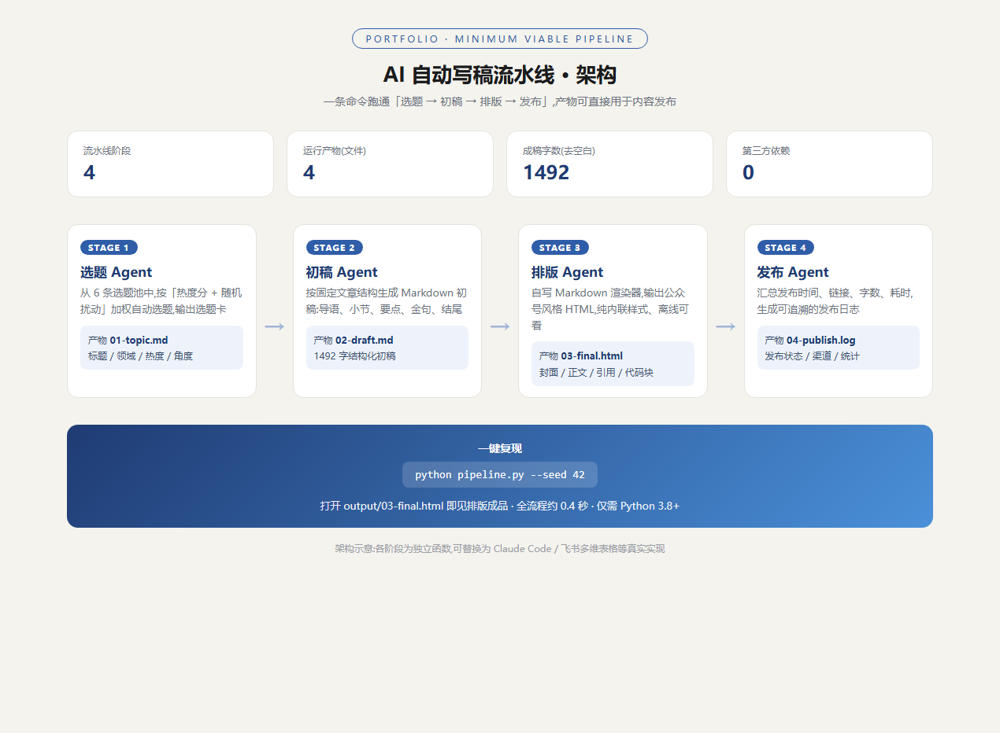
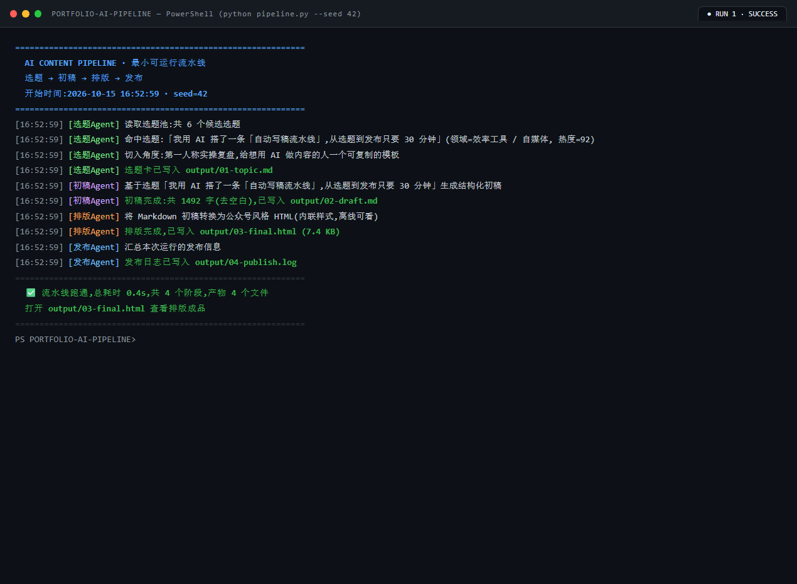
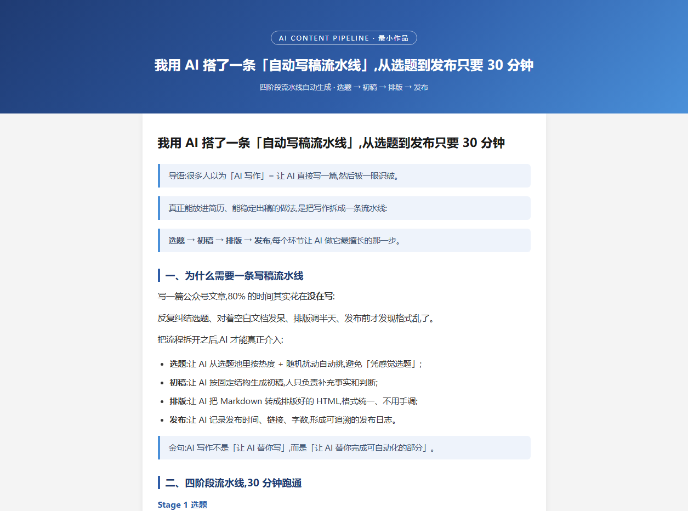

很多人在简历里写「熟悉 AI 工具」「会用 ChatGPT 写作」。面试官真正想看到的,是你用 AI 交付了一个完整结果。
这篇文章记录我做的第一个 AI 作品:一条「自动选题 → 生成初稿 → 排版发布」的内容流水线。它真实跑通了,产物是一篇排版好的公众号风格文章;代码只有 300 多行,零第三方依赖,任何人都能复现。
一句话:一条命令行流水线,输入一个随机种子,输出一篇排版好的文章 + 完整发布日志。
python pipeline.py --seed 42
全流程拆成四个阶段,每个阶段一个明确产物:
| 阶段 | Agent 职责 | 产物 |
|---|---|---|
| 1 · 选题 | 从选题池按「热度分 + 随机扰动」加权自动选题 | 01-topic.md 选题卡 |
| 2 · 初稿 | 按固定文章结构生成 Markdown 初稿 | 02-draft.md 初稿 |
| 3 · 排版 | 自写 Markdown 渲染器,转公众号风格 HTML | 03-final.html 成品 |
| 4 · 发布 | 汇总发布时间、链接、字数,写发布日志 | 04-publish.log 日志 |
它同时展示了四件事:
金句:AI 写作不是「让 AI 替你写」,而是「让 AI 替你完成可自动化的部分」。
下面是架构图:四个阶段串行,每个阶段有独立输入输出,数据流方向清晰。

这是我在本机 PowerShell 里的真实运行输出,一次通过,4 个阶段全部成功。

排版阶段直接产出公众号风格的 HTML:封面、导语、小节标题、引用金句、底部卡片,全部内联样式,离线可打开、可截图。

只需要 Python 3.8+,不需要装任何第三方库:
# 1. 下载项目(或从 GitHub 克隆) # 2. 进入项目目录 python pipeline.py --seed 42 # 3. 打开 output/03-final.html 查看排版成品 # 4. 查看 output/04-publish.log 确认发布记录
pipeline.py —— 流水线主脚本(四阶段,约 300 行)output/ —— 运行产物:选题卡 / 初稿 / 排版 HTML / 发布日志 / 运行日志assets/ —— 本文截图素材
—— 本文由 AI 流水线自动生成,人在环上负责判断 ——